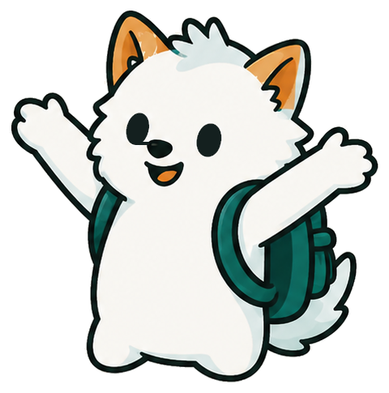

Найди профессию,
от которой горят глаза
Profy — онлайн-диагностика для старшеклассников. Три теста за одно прохождение: интересы, личность и мотивация. На выходе — понятный портрет себя, подходящие профессии и реальные университеты с программами под каждую из них.

- Пройти тесты
- Изучить профессии
- Выбрать программу
От сомнений до чёткого плана — за 3 шага
Одно прохождение — и на выходе понятный портрет себя, подходящие профессии и программы вузов под них
Расскажи о себе
Увлечения, кружки, достижения, любимые темы — коротко и в свободной форме. Это не тест и на результат не влияет: рассказ помогает точнее объяснить, почему подошла та или иная профессия.
Пройди диагностику
Три теста подряд: интересы, личность и мотивация. Экраны разные — шкала согласия, расстановка приоритетов, выбор из двух карточек. На 25%, 50% и 75% ждёт привал: короткая пауза, чтобы передохнуть.
Получи отчёт
Резюме о себе, карта интересов, сильные стороны, особенности личности, стиль мышления и мотивация — простым языком, без сухих баллов.
Всё для осознанного выбора — в одном месте
От первого вопроса до конкретной программы в вузе — без сухих баллов и без «магии» ИИ, которая ничего не проверяет
Разные форматы экранов
Шкала согласия, расстановка приоритетов, выбор из двух карточек — а не одна длинная анкета на сто вопросов.
Привалы по пути
На 25%, 50% и 75% — короткая пауза. А если отвечаешь слишком быстро, система мягко напомнит не спешить: скорость никак не оценивается.
Рассказ о себе
Короткий рассказ в свободной форме дополняет отчёт. А если интересы пока не выражены ярко — система опирается прежде всего на него.
Персональный отчёт
Текст пишет ИИ, но только на основе подтверждённых фактов о тебе — ничего не выдумывает. Если ИИ вдруг недоступен, готов запасной вариант по тем же данным.
Топ-10 профессий
Разбиты на три уровня: сильное совпадение, хорошее совпадение и «можно попробовать» — и у каждой объяснение, почему она подошла.
Реальные вузы и программы
Связь «профессия → программа в вузе» выстроена экспертами вручную. Показываем город и сортируем по международным и региональным рейтингам.
Три теста — и полный портрет
Все блоки связаны в один сценарий, а не в набор разрозненных анкет.
Тест интересов
К какому типу дела больше тянет. 146 утверждений по шкале согласия — от «совсем не моё» до «точно моё».
Тест личности
Как ты реагируешь на стресс, насколько общителен, открыт новому, доброжелателен и организован. 120 утверждений, та же шкала.
Тест мотивации
Что для тебя по-настоящему важно в работе. 12 раундов по три утверждения: отмечаешь, что больше похоже на тебя, а что меньше.
Один вопрос — прямо сейчас
Так выглядит шкала согласия в настоящем тесте. Отметь, насколько это про тебя — и увидишь, как ответ превращается в результат.
Мне нравится разбираться, как устроены сложные вещи
Одно из шести направлений карты интересов. В настоящем тесте таких утверждений 146 — картина складывается из всех сразу, а не из одного ответа.
Пройти диагностикуЧто будет в твоём отчёте
Шесть смысловых блоков понятным текстом — без сухих цифр, психологических баллов и терминов, которые нужно гуглить.
Краткое резюме
Кто ты в паре абзацев: за что цепляешься, что даётся легко.
Карта интересов
К каким типам дела тянет сильнее, а к каким — заметно меньше.
Сильные стороны
Что у тебя уже получается — по-человечески, а не ярлыками.
Особенности личности
Простым языком: как ты реагируешь на стресс, насколько открыт новому и организован.
Стиль мышления и мотивация
Как ты думаешь — креативно, системно, стратегически или практически — и что тебя по-настоящему двигает.
Подобранные профессии
С объяснением «почему подходит», нужными навыками и школьными предметами — и с университетами и программами под каждую.
Вот так выглядит твой результат
Сначала — отчёт по трём тестам, потом университеты и программы под каждую подобранную профессию. Переключи вкладку и посмотри оба экрана.
Тебя тянет разбираться, как всё устроено: ты быстрее включаешься там, где есть данные и понятная логика, и заметно теряешь интерес к задачам без видимого результата.
W
W
W
W
W
W
W
W
Отвечаем на частые вопросы
Диагностика занимает около 15 минут. Три теста рассчитаны на одно прохождение, но прогресс сохраняется автоматически: можно закрыть на любом вопросе и вернуться позже — продолжишь с того же места. На 25%, 50% и 75% специально сделаны привалы, чтобы передохнуть.
В основе — классические методики профориентации: тест интересов по типам деятельности, тест личности по ключевым чертам характера и тест мотивации через сравнение ценностей. Подсчёт однозначный, без всякой случайности. При этом результат — опора для решения, а не приговор.
2 440 университета: 128 казахстанских и 2 312 зарубежных. Внутри — 12 463 программы и специальности, и все они разложены по 145 профессиям. У каждой программы показан город, а сортировка идёт по международным и региональным рейтингам вузов.
Так бывает часто — в этом возрасте интересы у многих ещё не оформились. Поэтому до тестов можно коротко рассказать о себе в свободной форме: если по тесту интересов ничего не выражено ярко, система опирается прежде всего на этот рассказ.
Да, но только из подтверждённых фактов о тебе: результатов тестов и твоего рассказа о себе. ИИ ничего не придумывает от себя — он только переводит результаты на человеческий язык: связывает три теста и твой рассказ в один текст и объясняет, почему тебе подошла именно эта профессия.
Готов узнать,
кем тебе быть?
Три теста, персональный отчёт и реальные программы вузов — за одно прохождение